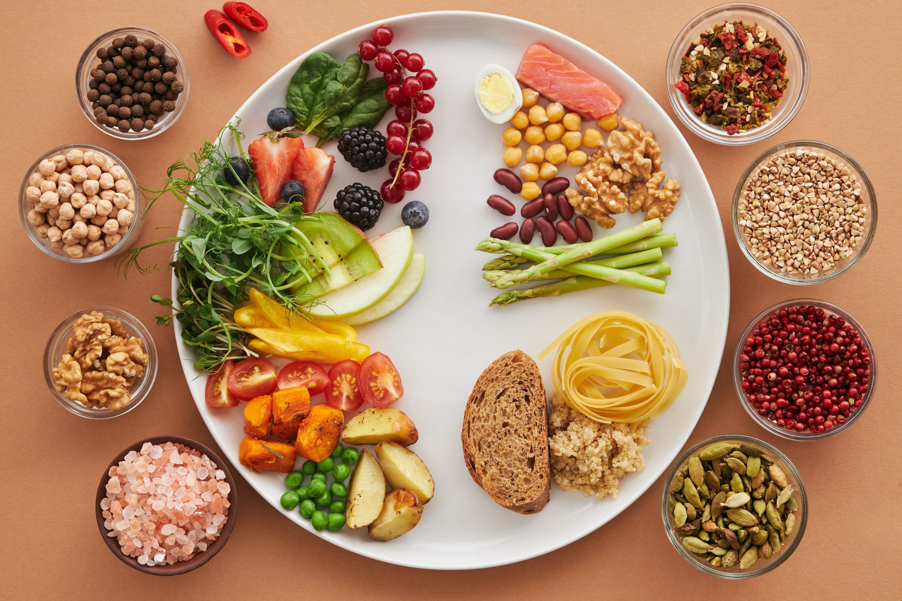
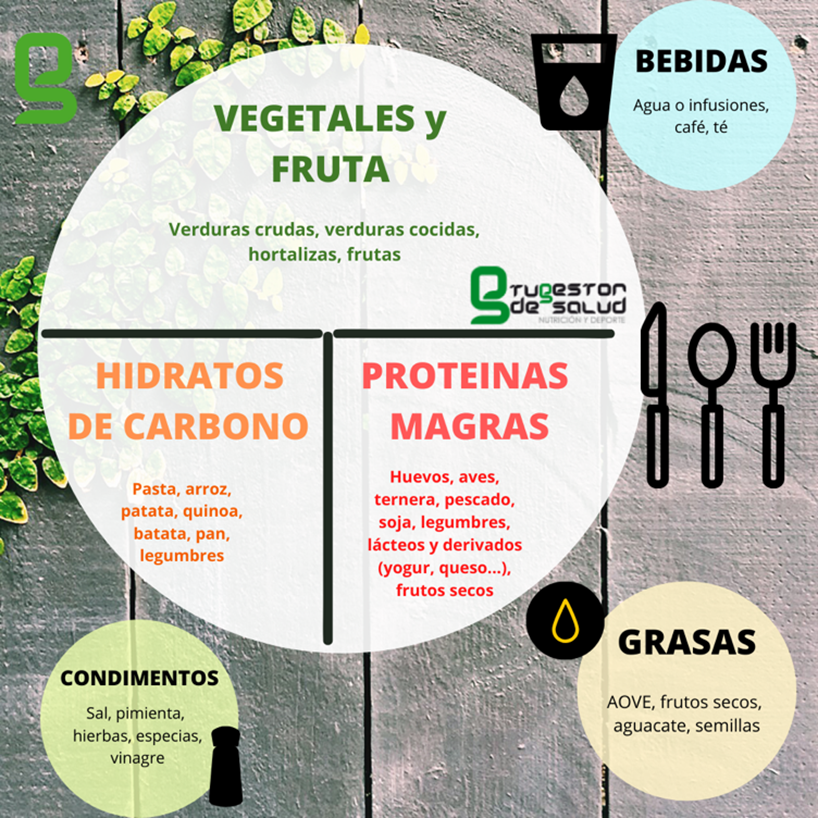

Frutas
Aportan vitaminas, minerales, agua y fibra. Podemos elegir frutas frescas y de estación.
Ejemplos: manzana, naranja, banana y pera.
BIENESTAR EN CADA PLATO
Pequeños hábitos, grandes cambios. Aprendé a alimentarte de manera variada, rica y equilibrada.

Una alimentación saludable consiste en elegir y combinar alimentos variados que aporten la energía y los nutrientes que nuestro cuerpo necesita. No se trata de comer siempre lo mismo ni de prohibir alimentos, sino de buscar variedad, equilibrio y buenos hábitos.
Las frutas, las verduras, las legumbres, los cereales integrales, los frutos secos y otros alimentos nutritivos pueden formar parte de nuestra alimentación cotidiana. También es importante prestar atención a las porciones, beber agua y disfrutar de las comidas sin apuro.
Comer saludable no significa comer menos, sino aprender a elegir mejor y disfrutar de una alimentación variada.
Cada grupo aporta diferentes nutrientes. Combinarlos nos ayuda a construir una alimentación variada.
Aportan vitaminas, minerales, agua y fibra. Podemos elegir frutas frescas y de estación.
Ejemplos: manzana, naranja, banana y pera.
Ofrecen vitaminas, minerales y fibra. Conviene variar los colores y tipos.
Ejemplos: zanahoria, zapallo, tomate y acelga.
Aportan proteínas vegetales, fibra y otros nutrientes importantes.
Ejemplos: lentejas, garbanzos y porotos.
Son una fuente importante de energía. Las versiones integrales aportan más fibra.
Ejemplos: avena, arroz integral y maíz.
Contribuyen al mantenimiento y la reparación de los tejidos del organismo.
Ejemplos: huevos, pescado, carnes y legumbres.
Aportan grasas saludables, fibra y diversos minerales.
Ejemplos: nueces, almendras, chía y girasol.
Incorporar alimentos variados y hábitos saludables es un pequeño paso para cuidar nuestro bienestar cada día.

Planificar con anticipación permite pensar en comidas variadas, aprovechar los ingredientes disponibles y reducir el desperdicio de alimentos.
Antes de ir de compras, revisá qué alimentos tenés en casa, prepará una lista y pensá algunas comidas para los próximos días.
Este ejemplo es orientativo. Las necesidades y las porciones varían según cada persona.
No hace falta preparar platos complicados para comer rico y variado. Estas son algunas ideas para empezar.
Ingredientes:
Preparación:
Lavá y cortá las verduras, agregá el huevo y el arroz o los garbanzos. Mezclá y condimentá a gusto.
Ingredientes:
Preparación:
Colocá la avena en un recipiente, agregá la leche o el yogur y sumá fruta cortada. Podés espolvorear un poco de canela.
Ingredientes:
Preparación:
Lavá y cortá las verduras, cocinalas hasta que estén tiernas, mezclalas con el huevo y cociná la tortilla completamente.
Manipular correctamente los alimentos ayuda a prevenir enfermedades transmitidas por alimentos.